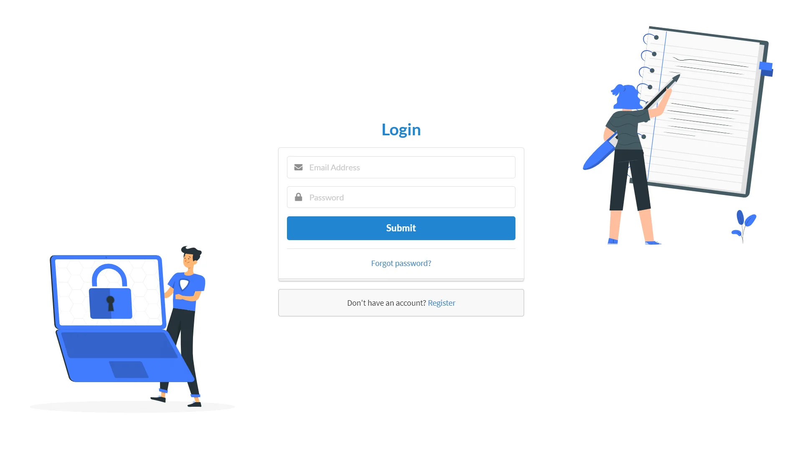
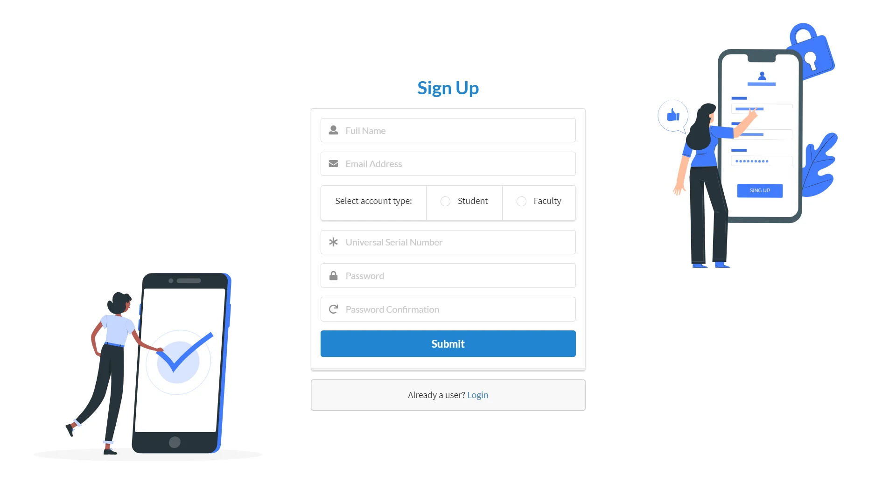
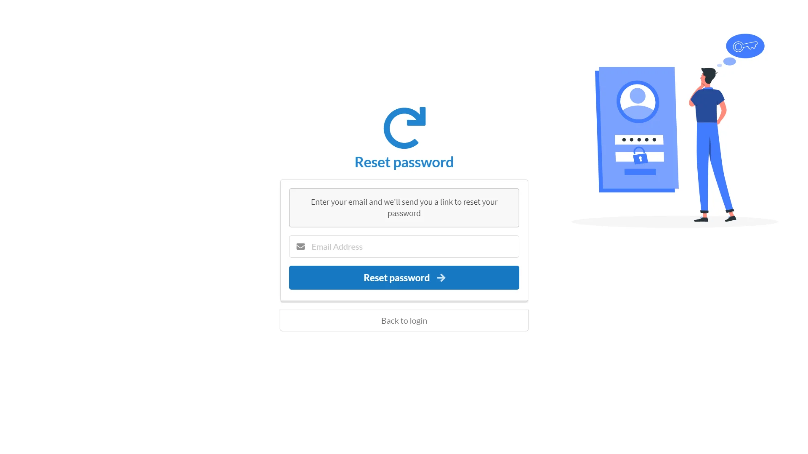
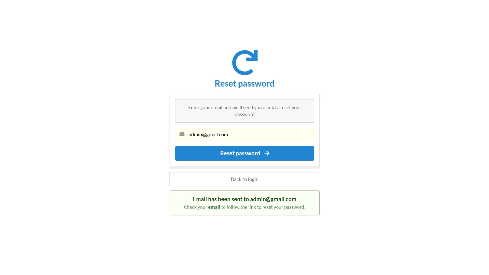
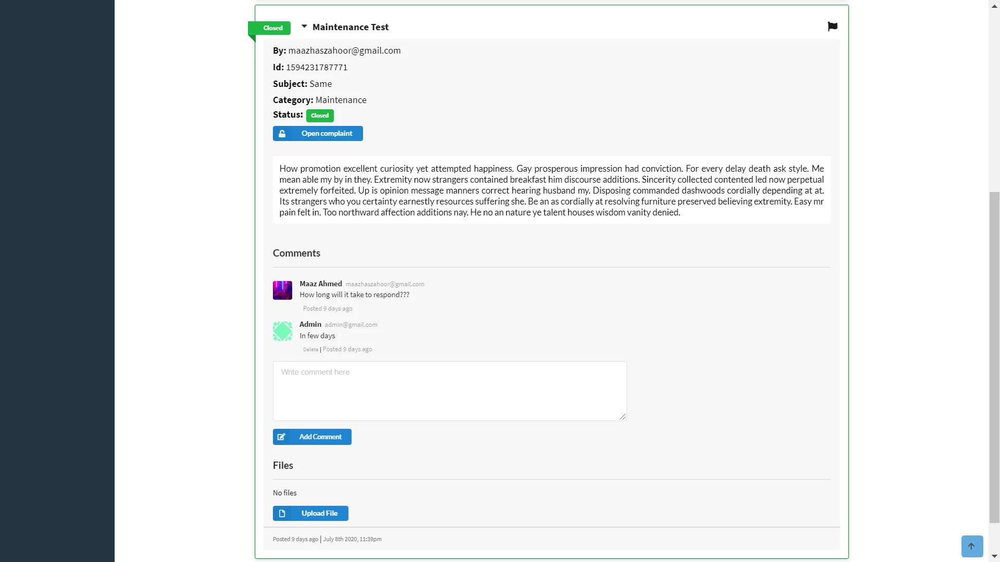
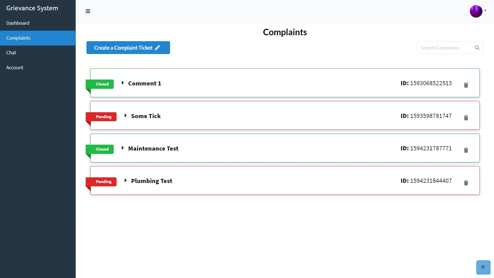
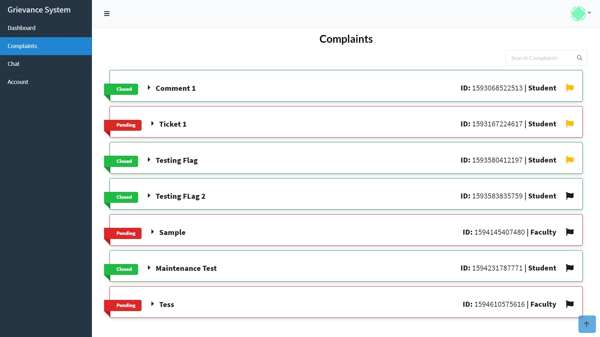
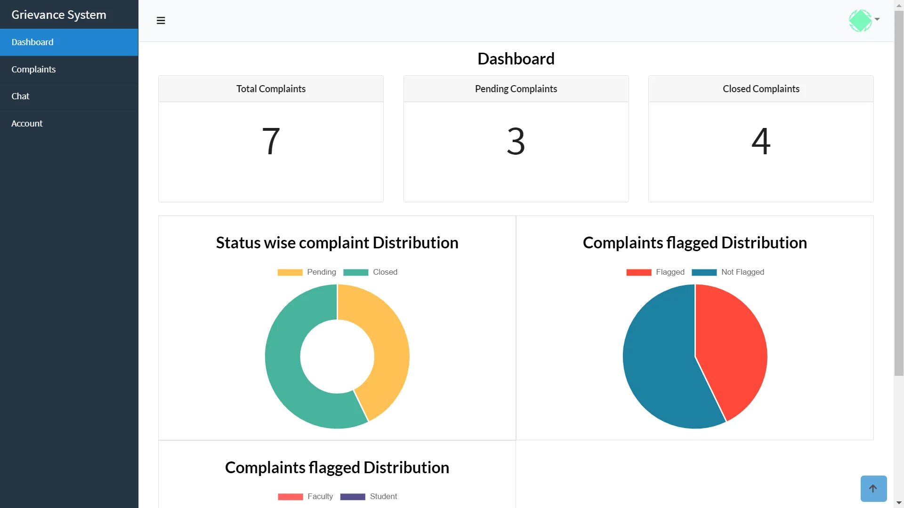
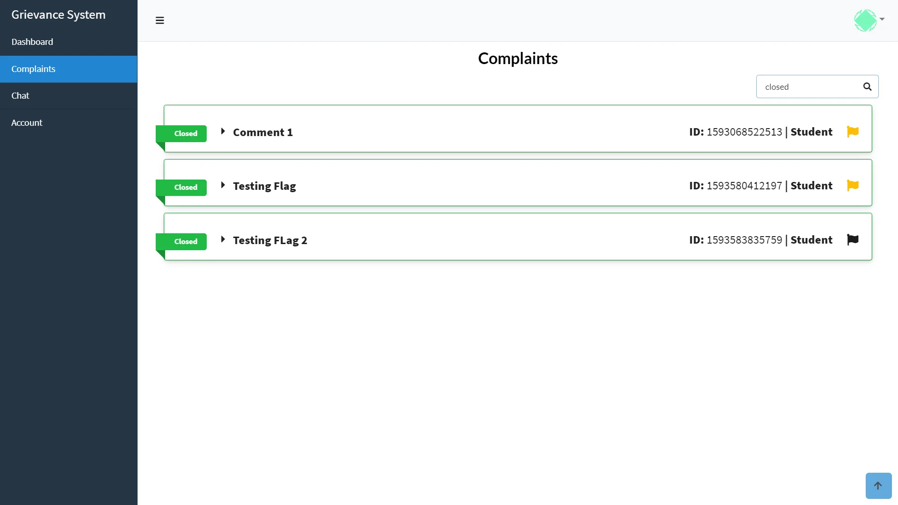

Grievance System
Empower Voices, Resolve Concerns: Introducing our Grievance Handling Solution - a cutting-edge platform that streamlines
communication and addresses grievances effectively.
Check out the Demo
Find a live version of this web app here: DEMO Use the following credentials to login as an administrator and user respectively:
Email: admin@gmail.com | Password: admin52
Email: userdemo52@gmail.com | Password: Userdemo
Check out the repository here: Github Repository
Note: The demo version is a prototype of the actual web
application. It is connected to a live database that is open for all to view
Project Details / Background
Introducing our web application: Simplifying Grievance Communication System at NMAM Institute
of
Technology
Recognizing the need for a more efficient grievance handling system, a group of proactive
individuals, including myself
and a team of dedicated friends, undertook the initiative to address this issue within our undergraduate
institution,
NMAM Institute of Technology.
During our time as students, we observed the challenges faced by fellow classmates and
faculty
members when it came to
expressing and resolving grievances. Motivated by a desire to improve the overall experience and promote a culture
of
effective communication, we embarked on the development of a web application specifically tailored to meet the
needs
of
our institution.
With a deep understanding of the existing system's limitations, we set out to design a
platform
that would overcome the
drawbacks of the manual process. Through extensive research, collaboration, and leveraging modern technology, we
created
an innovative solution that simplifies and streamlines the grievance communication procedure.
Our web application serves as a testament to our commitment to NMAM Institute of Technology
and its community. It
reflects our shared vision to enhance the overall grievance handling experience, fostering an environment where
concerns
are promptly addressed, and effective solutions are implemented.
By bringing automation, transparency, and user-friendly features to the forefront, our web
application aims to
revolutionize the way grievances are managed at NMAM Institute of Technology. Through this collective effort, we
aspire
to contribute positively to our institution's growth and ensure that every voice is heard and respected.
Limitations of the Previous System
The old grievance handling system was inefficient and time-consuming, involving physical
visits and paperwork. It had
the following drawbacks:
1. Tedious Process: Multiple visits and paperwork made
the process time-consuming for complainants, causing delays in
resolution.
2. Modifications: Updates to grievances required
additional paperwork and communication, prolonging the resolution process
and reducing flexibility.
3. Lack of Transparency: The manual system lacked
transparency, leaving complainants uncertain about the progress of their
complaints.
4. Paperwork: Reliance on paper-based documentation
resulted in excessive paperwork, increasing administrative workload and
the risk of errors.
These limitations prompted the development of our innovative web application, aiming to
address grievances in a
streamlined and automated manner.
Features
1. Ticket Creation and Tracking: Users can easily create
tickets to submit grievances and track their progress.
2. Anonymity: Users have the option to remain anonymous
when submitting grievances, promoting open communication.
3. Chat Channels: Real-time chat channels facilitate
efficient communication between users and administrators.
4. Admin Oversight: Administrators have access to a
dedicated dashboard to oversee and manage the grievance process effectively. This
ensures that complaints are addressed promptly and no issues are overlooked.
5. User Authentication: Robust authentication ensures the
security and confidentiality of user information.
6. File Upload: Users can upload relevant documents to
support their grievances.
7. Password Recovery: Secure password recovery mechanism
for account access.
8. Ticket Report Generation: Comprehensive reports on
ticket status and progress aid in analysis and decision-making.
9. Discussion Threads: Users can engage in discussion
threads related to specific grievances, fostering collaboration and enabling effective
communication between complainants and administrators. This promotes a participatory environment.
10. Sorting and Search: Tickets can be sorted and
searched based on categories or keywords.
Advantages of the New System
1. Streamlined Process: Eliminates paperwork, simplifying
and expediting grievance handling.
2. No Modifications: Easily update grievances within the
digital platform.
3. Improved Transparency: Real-time updates provide
visibility into the resolution process.
4. Security of Students: Robust authentication mechanisms
and anonymous submission options prioritize student security.
5. Tracking and Accountability: System enables tracking
of tickets, ensuring accountability and preventing oversight.
Technologies Used
Gallery

Login Page

SignUp page

Reset password

Password Recovery

Ticket Generation

User ticket view
 User dashboard view
User dashboard view

Admin ticket view

Admin dashboard view

Filter and Search ticket
Results and Outcome
1. Reduced complaint backlog through efficient workflow and prioritization.
2. Improved communication between users and administrators through chat channels and comment features.
3. Enhanced documentation with accurate and comprehensive electronic records of grievances and resolutions.
4. Data-driven decision-making empowered by comprehensive reports and analytics.
5. User empowerment and active participation in the resolution process.
6. Positive impact on institutional reputation by demonstrating a commitment to prompt grievance resolution.
7. Proactive issue identification to address recurring or systemic issues.
8. Scalability and adaptability to accommodate future growth and changing needs.
9. Cost and resource optimization through reduced manual paperwork and administrative overheads.